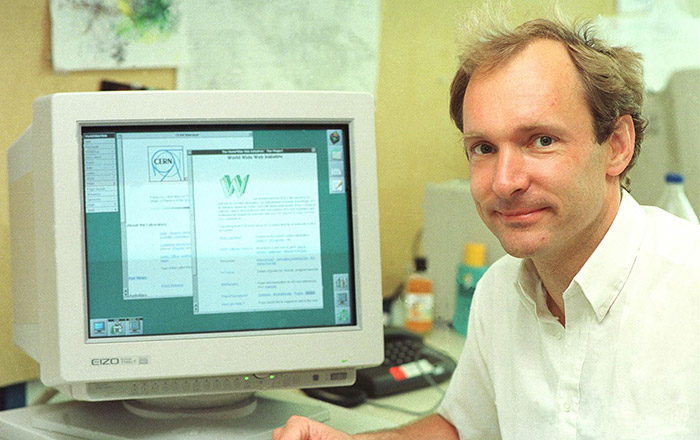

1980 року фізик Тім Бернерс-Лі
який на той час був співробітником CERN, запропонував і прототипував систему INQUIRE, яка мала полегшити сумісне користування документами для дослідників CERN. 1989 року Бернерс-Лі запропонував впровадити на базі Internet гіпертекстову систему документів. Вже наприкінці 1990 року він розробив HTML і написав браузер та серверне програмне забезпечення для запропонованої системи. У цьому ж році Тім Бернерс-Лі та Роберт Кайо, інженер інформаційних систем CERN, подали спільну заявку на фінансування проєкту, проте цей проєкт не був офіційно прийнятий CERN.
Таблиці стилів в тому чи іншому вигляді існували з зародження SGML в 1970-тих. Каскадні таблиці стилів розроблялися для спрощення процедури додавання інформації про стилі для веб-сторінок. З розвитком HTML з'явилася можливість використовувати різні механізми для додавання стилів до елементів сторінки. Еволюція HTML дала веб-дизайнерам більше можливостей для створення вигляду сайту, але HTML-код ставав складнішим для написання та зміни. Через різницю у відображення сторінки в різних браузерах збереження стилю сторінки було складним, користувачі мали менше контролю над відображенням контенту.